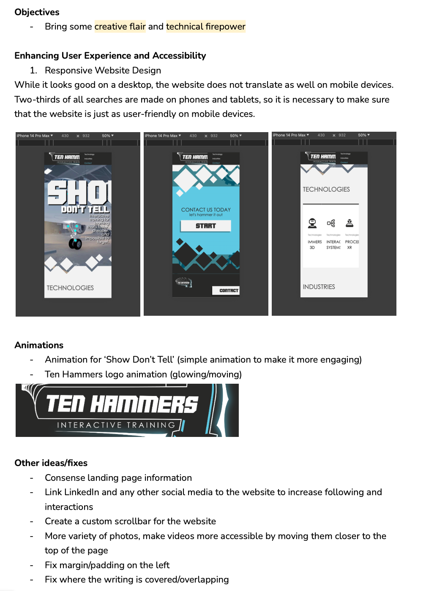

Week 2
Sound Design
Tasks
- External, Internal, Slide Arm and Vent Levers
- Brainstorming ideas for company website improvements
Notes and Reflection
- I enjoyed this task and found it easy to work from home while doing sound design, from the information Stewart provided me I was able to create a suite of sounds that I think fit well into the training program
- I asked questions when I was confused about certain sounds and Stewart responded quickly with answers. I learned something that is probably very important for sound design for gaming, which is 'satisfaction > distinctness > realism'
- This week I also started brainstorming for improvement for the website. Stewart said they have a 'need to bring some more creative flair and technical firepower to our website' and that he'd like to hear my thoughts as I specialised in web design as well as sound design. Below are some of the ideas I came up with. While the company website is not something I can go crazy with creativity-wise, I used my UI/UX knowledge to identify some areas for improvement that I would be able to implement for them if they asked.
